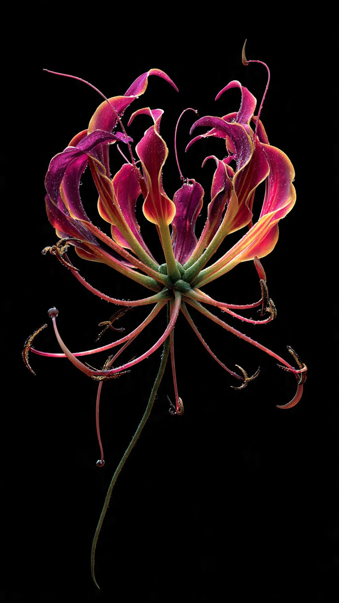
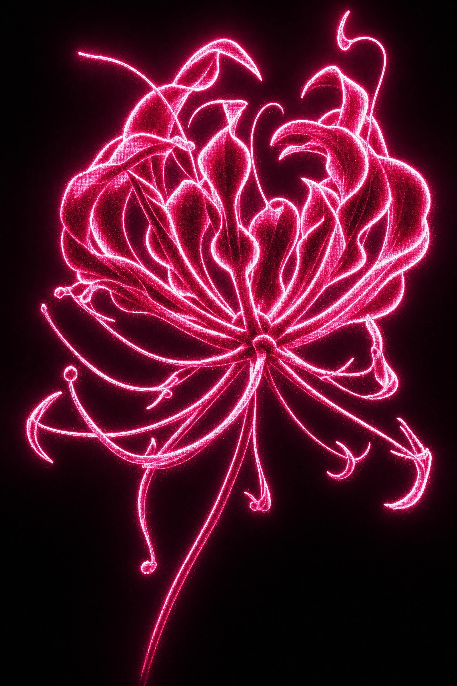

30TH
ANNIVERSARY
FEBRUARY
/ MARCH


A one-night showcase of juried performance and live sound works. This dynamic event features both solo and collaborative performance pieces, like short vignettes or more durational pieces with no definitive beginning or end. Inter-Action takes place during the Opening Reception and includes temporary works. Students must apply to be considered.
The 48.24.12 Video Contest (48 hours - 24 frames per second - 12 minute video) is a team based, challenge based, video competition. Each film screens at the Gene Siskel Theatre in April, with winners announced by a live jury at the end of the screening.
Students must register to participate in this competition.
Site/Sight is a juried, proposal based opportunity to do a site-specific installation or architectural intervention in one of the many alternate spaces in and around the LeRoy Neiman Center. Students must apply to be considered.
A juried selection of art and design works for the ArtBash exhibition. Students can submit ONE exhibition quality and ready 2D or 3D work to be considered by the jury.
Artworks must be dropped off at the Neiman Center to be considered.
Book Arts is a library that runs the duration of the ArtBash exhibition. A book, mixtape, a zine, a set of custom playing cards, or a slide carousel could easily work within these parameters.
Submit linear, time-based single-channel video for Black Box. Expanded Cinema includes sound works, GIFs, 3D mapping, games, apps, websites, looping or multichannel video, projection, light-based works requiring dark space, and physical works with a virtual component. Both are exhibited only during opening night. Students must apply to be considered.
2027
EXHIBITION / LOCATION
Exhibition
The Department of Contemporary Practices’ major year-end exhibition of student work brings together juried works, faculty selections and site-specific installations, including work from the First-Year Scholars Program.
LOCATION
LeRoy Neiman Center
37 S. Wabash AvenueChicago, IL 60603
Neiman Center SUG’s Art Gallery, the entire first floor of the Center, and spaces throughout the building’s first three floors.
Campus location ↗